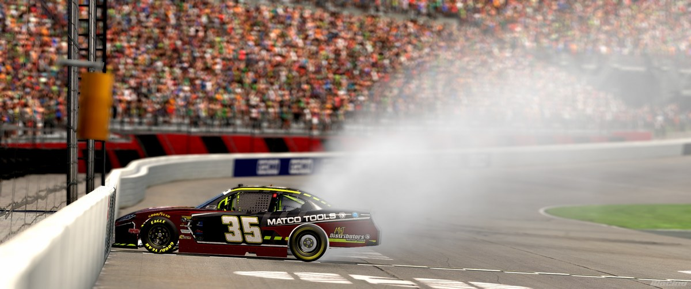

Banks Battles from 13th to Victory Lane at Atlanta Motor Speedway

The Saturday Night Racing League Cup Series returned to the old school legacy 2008 version of Atlanta Motor Speedway on Saturday Night for Race 14 of 22, and it was Joshua Banks delivering a statement performance — charging from 13th to lead a race-high 68 laps and claim his second victory of the Season 6 campaign.
Kenny Kibbey set the tone early by earning the pole, but it was outside polesitter Adam Cabot who got the jump at the start, leading the first 26 laps of the race before J R Shepherd took command on the long run. The race quickly developed into a strategic battle between two differing pit strategies. Cabot, Jeff J. Wright, and Bailey Turner led the way on the 3-stop strategy, while Shepherd ran in control on the 2-stop strategy — before ultimately pivoting to the 3-stop strategy as well, a decision that may have cost him a shot at Victory Lane. The 3-stop runners cycled through their pit stops around Lap 87, and it was ultimately Joshua Banks and his dominating long run pace that made the 2-stop strategy work to perfection, taking command and building the margin he needed to hold on for the victory.
Banks crossed the line ahead of A.J. Stravato in 2nd and Seth Hatchel in 3rd. Adam Cabot finished a solid 4th with Rhea Massey rounding out the top 5. Championship contenders Bailey Turner and Kenny Kibbey came home 10th and 12th respectively. Jeff J. Wright, who appeared to be in contention for a top 5 finish, once again suffered a disconnection due to a hardware issue that cost him valuable positions and ultimately relegated him to 29th at the finish.
The result tightens the championship battle at the top — A.J. Stravato reclaims the points lead with 536, just 4 ahead of Bailey Turner (532) as the two continue their season-long duel with just 3 races remaining in the regular season (Sonoma, Richmond, and Chicagoland). Kenny Kibbey holds 3rd at 497, a full 39 points back.
The SNR Cup Series continues next Saturday Night. Tune into VSPEED for full live coverage!